Sites web
Sites vitrines, portfolios et interfaces sur mesure, beaux sur tous les écrans.
Disponible pour de nouveaux projets
Développeur web & graphiste basé en Belgique. Je conçois des identités et des sites web qui laissent une impression durable.
Découvrir mon travail ↓01 — À PROPOS
Je suis Youssef Nait Ikkan, développeur web et graphiste polyvalent. Ambitieux, créatif et toujours curieux d’apprendre, je mets mes compétences à votre service pour concevoir des projets qui vous ressemblent. Mon objectif : collaborer avec vous avec passion, écoute et sérieux, de la première idée jusqu’au résultat final.
Échangeons sur votre projet ↗02 — EXPERTISE
Sites vitrines, portfolios et interfaces sur mesure, beaux sur tous les écrans.
Logos, univers graphiques et systèmes de marque qui racontent votre histoire.
Interfaces intuitives et supports de communication pensés avec précision.
Des automatisations intelligentes pour simplifier les tâches répétitives de votre activité.
03 — SÉLECTION
Chaque collaboration mérite une solution qui lui ressemble. Découvrez une première réalisation.
01 / 01
Plateforme touristique · Projet de TFE
Une plateforme de découverte dédiée à Tafraout : hébergements, restauration, expériences, événements et conseils pratiques pour préparer son séjour.
Voir le site en ligne ↗IDENTITÉS VISUELLES
Une sélection de logos conçus pour des projets et univers différents.
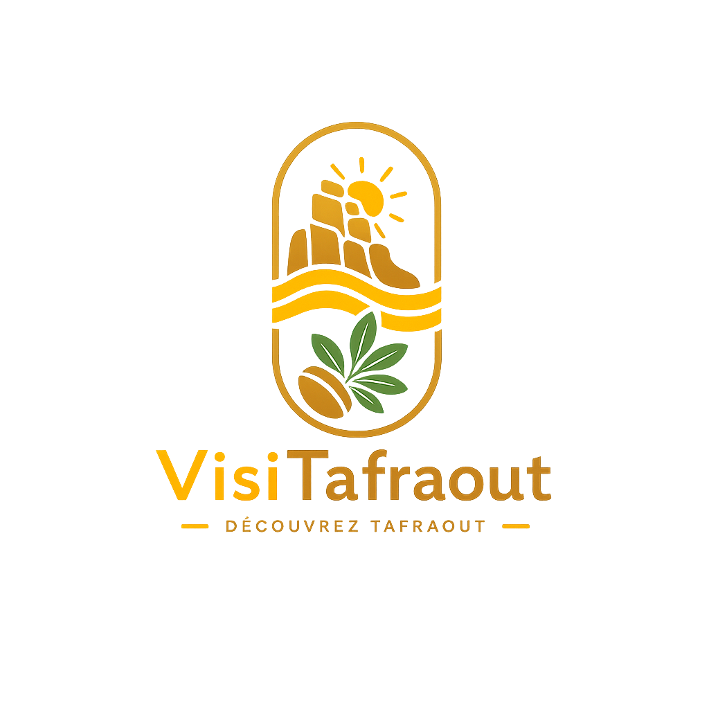
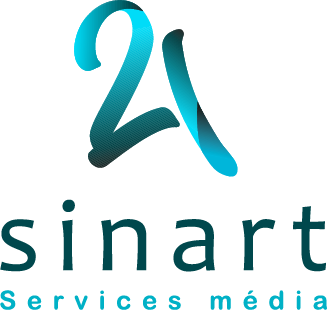
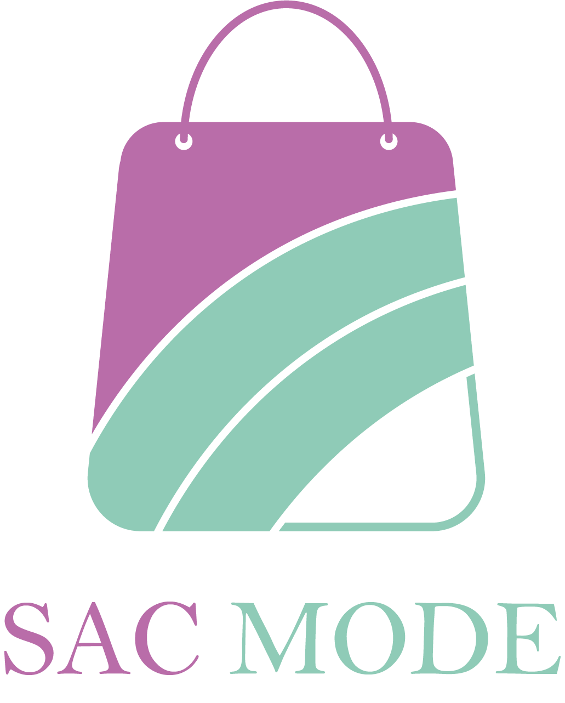
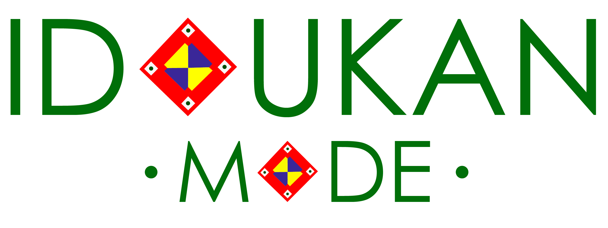
SUPPORTS IMPRIMÉS
Cartes de visite et flyer : des compositions pensées pour être mémorables, lisibles et fidèles à chaque univers de marque.
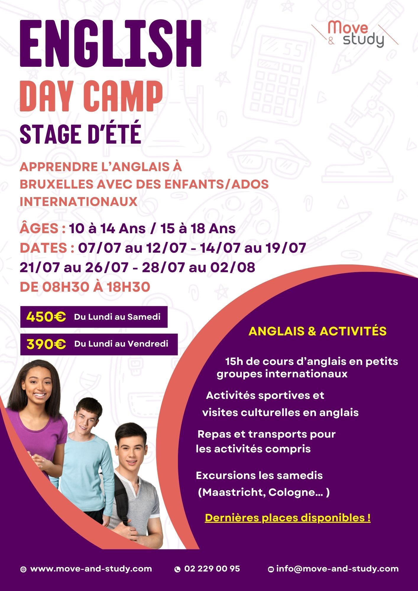
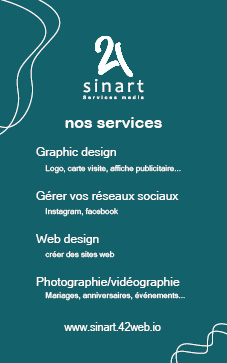
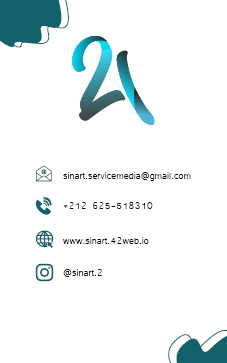
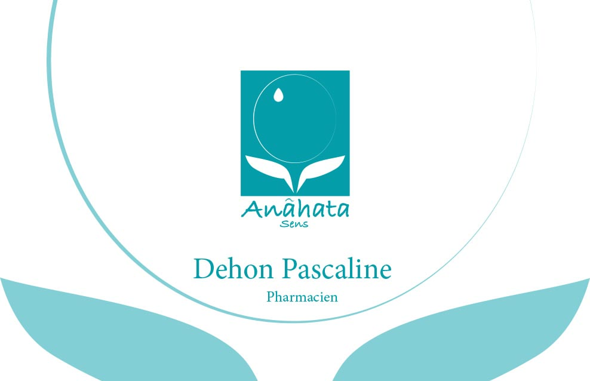
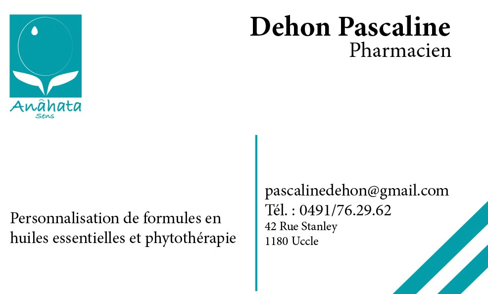
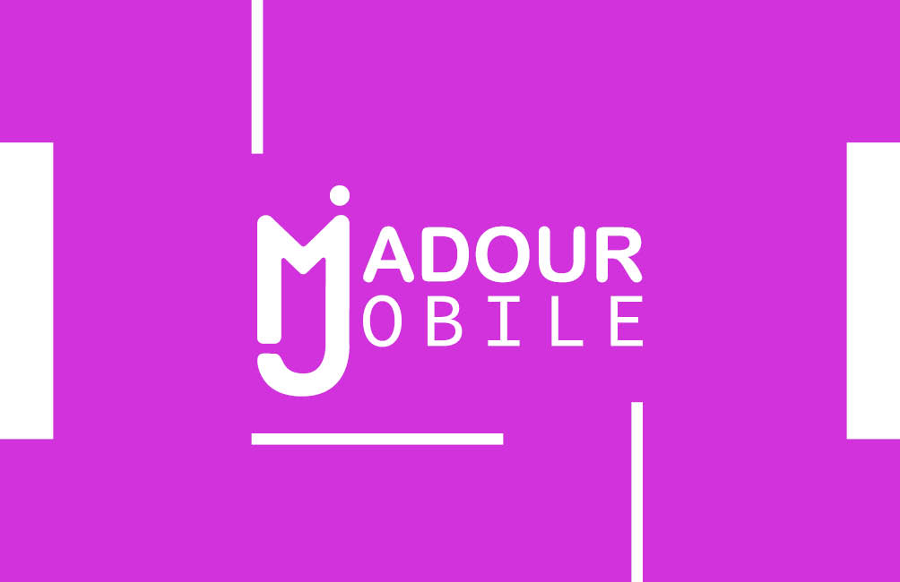
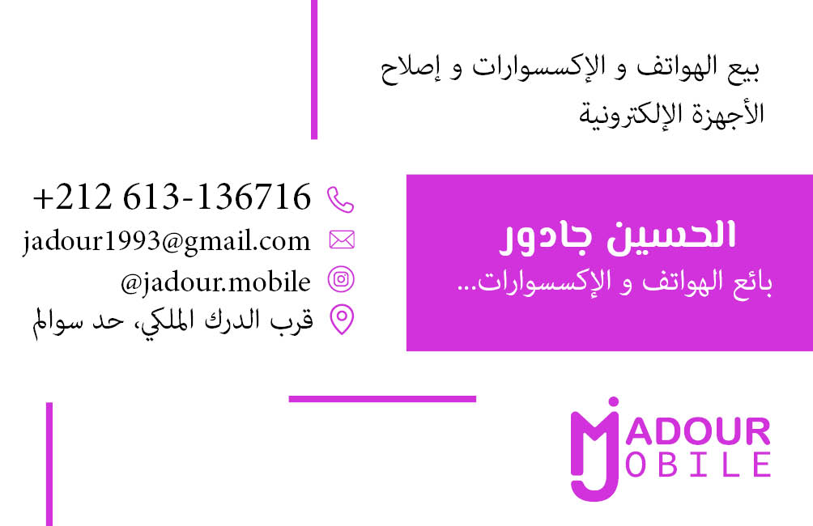
04 — CONTACT